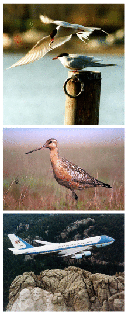
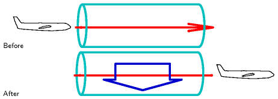
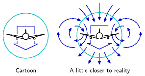
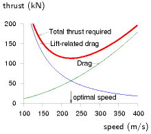
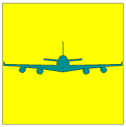
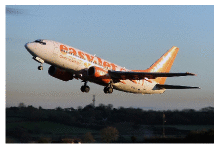
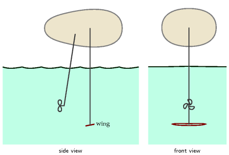
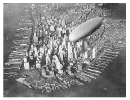
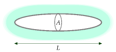
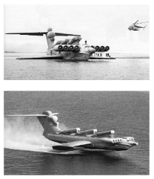

C Planes II

Figure C.1. Birds: two Arctic terns, a bar-tailed godwit, and a Boeing 747.
What we need to do is to look at how you make air travel more energy efficient, how you develop the new fuels that will allow us to burn less energy and emit less.
Tony Blair
Hoping for the best is not a policy, it is a delusion.
Emily Armistead, Greenpeace
What are the fundamental limits of travel by flying? Does the physics of flight require an unavoidable use of a certain amount of energy, per ton, per kilometre flown? What’s the maximum distance a 300-ton Boeing 747 can fly? What about a 1-kg bar-tailed godwit or a 100-gram Arctic tern?
Just as Chapter 3, in which we estimated consumption by cars, was followed by Chapter A, offering a model of where the energy goes in cars, this chapter fills out Chapter 5, discussing where the energy goes in planes. The only physics required is Newton’s laws of motion, which I’ll describe when they’re needed.
This discussion will allow us to answer questions such as “would air travel consume much less energy if we travelled in slower propellor-driven planes?” There’s a lot of equations ahead: I hope you enjoy them!
How to fly
Planes (and birds) move through air, so, just like cars and trains, they experience a drag force, and much of the energy guzzled by a plane goes into pushing the plane along against this force. Additionally, unlike cars and trains, planes have to expend energy in order to stay up.
Planes stay up by throwing air down. When the plane pushes down on air, the air pushes up on the plane (because Newton’s third law tells it to). As long as this upward push, which is called lift, is big enough to balance the downward weight of the plane, the plane avoids plummeting downwards.
When the plane throws air down, it gives that air kinetic energy. So creating lift requires energy. The total power required by the plane is the sum of the power required to create lift and the power required to overcome ordinary drag. (The power required to create lift is usually called “induced drag,” by the way. But I’ll call it the lift power, Plift.)
The two equations we’ll need, in order to work out a theory of flight, are Newton’s second law:
\[ \begin{matrix} {\text{force} = \text{rate\ of\ change\ of\ momentum}} \\ \end{matrix} \]
and Newton’s third law, which I just mentioned:
\[ \begin{matrix} {\text{force\ exerted\ on\ A\ by\ B} = \text{-\ force\ exerted\ on\ B\ by\ A}} \\ \end{matrix} \]
If you don’t like equations, I can tell you the punchline now: we’re going to find that the power required to create lift turns out to be equal to the power required to overcome drag. So the requirement to “stay up” doubles the power required.

Figure C.2. A plane encounters a stationary tube of air. Once the plane has passed by, the air has been thrown downwards by the plane. The force exerted by the plane on the air to accelerate it downwards is equal and opposite to the upwards force exerted on the plane by the air.

Figure C.3. Our cartoon assumes that the plane leaves a sausage of air moving down in its wake. A realistic picture involves a more complex swirling flow. For the real thing, see figure C.4.
(Figure omitted from this edition: third-party rights.)
Figure C.4. Air flow behind a plane. Photo by NASA Langley Research Center.
Let’s make a cartoon of the lift force on a plane moving at speed v. In a time t the plane moves a distance vt and leaves behind it a sausage of downward-moving air (figure C.2). We’ll call the cross-sectional area of this sausage As. This sausage’s diameter is roughly equal to the wingspan w of the plane. (Within this large sausage is a smaller sausage of swirling turbulent air with cross-sectional area similar to the frontal area of the plane’s body.) Actually, the details of the air flow are much more interesting than this sausage picture: each wing tip leaves behind it a vortex, with the air between the wingtips moving down fast, and the air beyond (outside) the wingtips moving up (figures C.3 & C.4). This upward-moving air is exploited by birds flying in formation: just behind the tip of a bird’s wing is a sweet little updraft. Anyway, let’s get back to our sausage.
The sausage’s mass is
\[ \begin{matrix} {m_{\text{sausage}} = \text{density} \times \text{volume} = \rho vtA_{\text{s}}\text{.}} \\ \end{matrix} \]
Let’s say the whole sausage is moving down with speed u, and figure out what u needs to be in order for the plane to experience a lift force equal to its weight mg. The downward momentum of the sausage created in time t is
\[ \begin{matrix} {{\text{mass} \times \text{velocity} = m}_{\text{sausage}}u = \rho vtA_{\text{s}}u\text{.}} \\ \end{matrix} \]
And by Newton’s laws this must equal the momentum delivered by the plane’s weight in time t, namely,
\[ \begin{matrix} {mgt\text{.}} \\ \end{matrix} \]
Rearranging this equation,
\[ \begin{matrix} {\rho vtA_{\text{s}}u = mgt\text{,}} \\ \end{matrix} \]
we can solve for the required downward sausage speed,
[u = ]
Interesting! The sausage speed is inversely related to the plane’s speed v. A slow-moving plane has to throw down air harder than a fast-moving plane, because it encounters less air per unit time. That’s why landing planes, travelling slowly, have to extend their flaps: so as to create a larger and steeper wing that deflects air more.
What’s the energetic cost of pushing the sausage down at the required speed u? The power required is
\[ \begin{matrix} {P_{\text{lift}} = \frac{\text{kinetic\ energy\ of\ sausage}}{\text{time}}} \\ {\phantom{P_{\text{lift}}} = \frac{1}{t}\frac{1}{2}m_{\text{sausage}}u^{2}} \\ {\phantom{P_{\text{lift}}} = \frac{1}{2t}\rho vtA_{\text{s}}\left( \frac{mg}{\rho vA_{\text{s}}} \right)^{2}} \\ {\phantom{P_{\text{lift}}} = \frac{1}{2}\frac{\left( {mg} \right)^{2}}{\rho vA_{\text{s}}}} \\ \end{matrix} \]
The total power required to keep the plane going is the sum of the drag power and the lift power:
\[ \begin{matrix} {P_{\text{total}} = P_{\text{drag}} + P_{\text{lift}}} \\ {\phantom{P_{\text{total}}} = \frac{1}{2}c_{\text{d}}\rho A_{\text{p}}v^{3} + \frac{1}{2}\frac{\left( {mg} \right)^{2}}{\rho vA_{\text{s}}}\text{,}} \\ \end{matrix} \]
where Ap is the frontal area of the plane and cd is its drag coefficient (as in Chapter A).
The fuel-efficiency of the plane, expressed as the energy per distance travelled, would be
\[ \begin{matrix} {\left. \frac{\text{energy}}{\text{distance}} \right|_{\text{ideal}} = \frac{P_{\text{total}}}{v} = \frac{1}{2}c_{\text{d}}\rho A_{\text{p}}v^{2} + \frac{1}{2}\frac{\left( {mg} \right)^{2}}{\rho v^{2}A_{\text{s}}}\text{,}} \\ \end{matrix} \]
if the plane turned its fuel’s power into drag power and lift power perfectly efficiently. (Incidentally, another name for “energy per distance travelled” is “force,” and we can recognize the two terms above as the drag force 1⁄2cdρApv2and the lift-related force 1⁄2(mg)2/(ρv2As). The sum is the force, or “thrust,” that specifies exactly how hard the engines have to push.)

Figure C.5. The force required to keep a plane moving, as a function of its speed v, is the sum of an ordinary drag force 1⁄2cdρApv2 – which increases with speed – and the lift-related force (also known as the induced drag) 1/2(mg)2/(ρv2As) – which decreases with speed. There is an ideal speed, voptimal, at which the force required is minimized. The force is an energy per distance, so minimizing the force also minimizes the fuel per distance. To optimize the fuel efficiency, fly at voptimal. This graph shows our cartoon’s estimate of the thrust required, in kilonewtons, for a Boeing 747 [1] of mass 319 t, wingspan 64.4 m, drag coefficient 0.03, and frontal area 180 m2, travelling in air of density ρ = 0.41 kg/m3 (the density at a height of 10 km), as a function of its speed v in m/s. Our model has an optimal speed voptimal = 220 m/s (540 mph). For a cartoon based on sausages, this is a good match to real life!
Real jet engines have an efficiency of about ε = 1/3, [2] so the energy-per-distance of a plane travelling at speed v is
\[ \begin{matrix} {\frac{\text{energy}}{\text{distance}} = \frac{1}{\varepsilon}\left( {\frac{1}{2}c_{\text{d}}\rho A_{\text{p}}v^{2} + \frac{1}{2}\frac{\left( {mg} \right)^{2}}{\rho v^{2}A_{\text{s}}}} \right)\text{.}} \\ \end{matrix} \]
This energy-per-distance is fairly complicated; but it simplifies greatly if we assume that the plane is designed to fly at the speed that minimizes the energy-per-distance. The energy-per-distance, you see, has got a sweetspot as a function of v (figure C.5). The sum of the two quantities (c_{}A_{}v^{2}) and () is smallest when the two quantities are equal. This phenomenon is delightfully common in physics and engineering: two things that don’t obviously have to be equal are actually equal, or equal within a factor of 2.
So, this equality principle tells us that the optimum speed for the plane is such that
\[ \begin{matrix} {c_{\text{d}}\rho A_{\text{p}}v^{2} = \frac{\left( mg \right)^{2}}{\rho v^{2}A_{\text{s}}}\text{,}} \\ \end{matrix} \]
i.e.
\[ \begin{matrix} {\rho v_{\text{opt}}^{2} = \frac{mg}{\sqrt{c_{\text{d}}A_{\text{p}}A_{\text{s}}}}\text{,}} \\ \end{matrix} \]
This defines the optimum speed if our cartoon of flight is accurate; the cartoon breaks down if the engine efficiency ε depends significantly on speed, or if the speed of the plane exceeds the speed of sound (330 m/s); above the speed of sound, we would need a different model of drag and lift.
Let’s check our model by seeing what it predicts is the optimum speed for a 747 and for an albatross. We must take care to use the correct air-density: if we want to estimate the optimum cruising speed for a 747 at 30 000 feet, we must remember that air density drops with increasing altitude z as exp(−mgz/kT), where m is the mass of nitrogen or oxygen molecules, and kT is the thermal energy (Boltzmann’s constant times absolute temperature). The density is about 3 times smaller at that altitude.
The predicted optimal speeds (table C.6) are more accurate than we have a right to expect! The 747’s optimal speed is predicted to be 540mph, and the albatross’s, 32mph – both very close to the true cruising speeds of the two birds (560mph and 30–55mph respectively).
Let’s explore a few more predictions of our cartoon. We can check whether the force (C.13) is compatible with the known thrust of the 747. Remembering that at the optimal speed, the two forces are equal, we just need to pick one of them and double it:
\[ \begin{matrix} {\text{force} = \left. \frac{\text{energy}}{\text{distance}} \right|_{\text{ideal}} = \frac{1}{2}c_{\text{d}}\rho A_{\text{p}}v^{2} + \frac{1}{2}\frac{\left( {mg} \right)^{2}}{\rho v^{2}A_{\text{s}}}} \\ {\phantom{\text{force}} = c_{\text{d}}\rho A_{\text{p}}v_{\text{opt}}^{2}} \\ {\phantom{\text{force}} = c_{\text{d}}\rho A_{\text{p}}\frac{mg}{\rho\left( {c_{\text{d}}A_{\text{p}}A_{\text{s}}} \right)^{1/2}}} \\ {\phantom{\text{force}} = \left( \frac{c_{\text{d}}A_{\text{p}}}{A_{\text{s}}} \right)^{1/2}mg\text{.}} \\ \end{matrix} \]
Bird
747
Albatross
Designer
Boeing
natural selection
Mass (fully-laden)
m
363 000 kg
8 kg
Wingspan
w
64.4 m
3.3 m
Area*
Ap
180 m2
0.09 m2
Density
ρ
0.4 kg/m3
1.2 kg/m3
Drag coefficient
cd
0.03
0.1
Optimum speed
vopt
220 m/s = 540 mph
14 m/s = 32 mph
Table C.6. Estimating the optimal speeds for a jumbo jet and an albatross. ∗ Frontal area estimated for 747 by taking cabin width (6.1 m) times estimated height of body (10 m) and adding double to allow for the frontal area of engines, wings, and tail; for albatross, frontal area of 1 square foot estimated from a photograph.

Figure C.7. Frontal view of a Boeing 747, used to estimate the frontal area Ap of the plane. The square has area As (the square of the wingspan).
| Airbus A320 | 17 |
| Boeing 767-200 | 19 |
| Boeing 747-100 | 18 |
| Common Tern | 12 |
| Albatross | 20 |
Table C.8. Lift-to-drag ratios.
Let’s define the filling factor fA to be the area ratio:
\[ \begin{matrix} {f_{\text{A}} = \frac{A_{\text{p}}}{A_{\text{s}}}\text{.}} \\ \end{matrix} \]
(Think of fA as the fraction of the square occupied by the plane in figure C.7.) Then
\[ \begin{matrix} {\text{force} = \left( {c_{\text{d}}f_{\text{A}}} \right)^{1/2}\left( {mg} \right)\text{.}} \\ \end{matrix} \]
Interesting! Independent of the density of the fluid through which the plane flies, the required thrust (for a plane travelling at the optimal speed) is just a dimensionless constant (cdfA)1/2 times the weight of the plane. This constant, by the way, is known as the drag-to-lift ratio of the plane. (The lift-to-drag ratio has a few other names: the glide number, glide ratio, aerodynamic efficiency, or finesse; typical values are shown in table C.8.)
Taking the jumbo jet’s figures, cd ≅ 0.03 and fA ≅ 0.04, we find the required thrust is
\[ \begin{matrix} {\left( {c_{\text{d}}f_{\text{A}}} \right)^{1/2}mg = 0.036\ mg = 130\text{~kN.}} \\ \end{matrix} \]
How does this agree with the 747’s spec sheets? In fact each of the 4 engines has a maximum thrust of about 250 kN, but this maximum thrust is used only during take-off. During cruise, the thrust is much smaller: the thrust of a cruising 747 is 200 kN, just 50% more than our cartoon suggested. Our cartoon is a little bit off because our estimate of the drag-to-lift ratio was a little bit low.
(Figure omitted from this edition: third-party rights.)
Figure C.9. Cessna 310N: 60 kWh per 100 passenger-km. A Cessna 310 Turbo carries 6 passengers (including 1 pilot) at a speed of 370 km/h. Photograph by Adrian Pingstone.
This thrust can be used directly to deduce the transport efficiency achieved by any plane. We can work out two sorts of transport efficiency: the energy cost of moving weight around, measured in kWh per ton-kilometre; and the energy cost of moving people, measured in kWh per 100 passenger-kilometres.
Efficiency in weight terms
Thrust is a force, and a force is an energy per unit distance. The total energy used per unit distance is bigger by a factor (1/ε), where ε is the efficiency of the engine, which we’ll take to be 1/3.
Here’s the gross transport cost, defined to be the energy per unit weight (of the entire craft) per unit distance:
\[ \begin{matrix} {\text{transport\ cost} = \frac{1}{\varepsilon}\frac{\text{force}}{\text{mass}}} \\ {\phantom{\text{transport\ cost}} = \frac{1}{\varepsilon}\frac{\left( {c_{\text{d}}f_{\text{A}}} \right)^{1/2}mg}{m}} \\ {\phantom{\text{transport\ cost}} = \frac{\left( {c_{\text{d}}f_{\text{A}}} \right)^{1/2}}{\varepsilon}g\text{.}} \\ \end{matrix} \]
So the transport cost is just a dimensionless quantity (related to a plane’s shape and its engine’s efficiency), multiplied by g, the acceleration due to gravity. Notice that this gross transport cost applies to all planes, but depends only on three simple properties of the plane: its drag coefficient, the shape of the plane, and its engine efficiency. It doesn’t depend on the size of the plane, nor on its weight, nor on the density of air. If we plug in ε = 1/3 and assume a lift-to-drag ratio of 20 we find the gross transport cost of any plane, according to our cartoon, is
0.15 g
or
0.4 kWh/ton-km.
Can planes be improved?
If engine efficiency can be boosted only a tiny bit by technological progress, and if the shape of the plane has already been essentially perfected, then there is little that can be done about the dimensionless quantity. The transport efficiency is close to its physical limit. The aerodynamics community say that the shape of planes could be improved a little by a switch to blended-wing bodies, and that the drag coefficient could be reduced a little by laminar flow control, a technology that reduces the growth of turbulence over a wing by sucking a little air through small perforations in the surface (Braslow, 1999). Adding laminar flow control to existing planes would deliver a 15% improvement in drag coefficient, and the change of shape to blended-wing bodies is predicted to improve the drag coefficient by about 18% (Green, 2006). And equation (C.26) says that the transport cost is proportional to the square root of the drag coefficient, so improvements of cd by 15% or 18% would improve transport cost by 7.5% and 9% respectively.
(Figure omitted from this edition: third-party rights.)
Figure C.10. “Fasten your cufflinks.” A Bombardier Learjet 60XR carrying 8 passengers at 780 km/h has a transport cost of 150 kWh per 100 passenger-km. Photograph by Adrian Pingstone.
This gross transport cost is the energy cost of moving weight around, including the weight of the plane itself. To estimate the energy required to move freight by plane, per unit weight of freight, we need to divide by the fraction that is cargo. For example, if a full 747 freighter is about 1/3 cargo, then its transport cost is
0.45 g,
or roughly 1.2 kWh/ton-km. This is just a little bigger than the transport cost of a truck, which is 1 kWh/ton-km.
Transport efficiency in terms of bodies
Similarly, we can estimate a passenger transport-efficiency for a 747.
\[ \begin{matrix} \text{transport\ efficiency\ (passenger-km\ per\ litre\ of\ fuel)} \\ {= \text{number\ of\ passengers} \times \frac{\text{energy\ per\ litre}}{\frac{\text{thrust}}{\varepsilon}}} \\ {= \text{number\ of\ passengers} \times \frac{\varepsilon \times \text{energy\ per\ litre}}{\text{thrust}}} \\ {= \text{400} \times \frac{1}{2}\frac{38\text{~MJ/litre}}{\text{200\ 000\ N}}} \\ {= 25\text{~passenger-km\ per\ litre}} \\ \end{matrix} \]
This is a bit more efficient than a typical single-occupant car (12 km per litre). So travelling by plane is more energy-efficient than car if there are only one or two people in the car; and cars are more efficient if there are three or more passengers in the vehicle.
Key points

Figure C.11. Boeing 737-700: 30 kWh per 100 passenger-km. Photograph © Tom Collins.
We’ve covered quite a lot of ground! Let’s recap the key ideas. Half of the work done by a plane goes into staying up; the other half goes into keeping going. The fuel efficiency at the optimal speed, expressed as an energy-per-distance-travelled, was found in the force (C.22), and it was simply proportional to the weight of the plane; the constant of proportionality is the drag-to-lift ratio, which is determined by the shape of the plane. So whereas lowering speed-limits for cars would reduce the energy consumed per distance travelled, there is no point in considering speed-limits for planes. Planes that are up in the air have optimal speeds, different for each plane, depending on its weight, and they already go at their optimal speeds. If you ordered a plane to go slower, its energy consumption would increase. The only way to make a plane consume fuel more efficiently is to put it on the ground and stop it. Planes have been fantastically optimized, and there is no prospect of significant improvements in plane efficiency. (See chapter 5and chapter 20 for further discussion of the notion that new superjumbos are “far more efficient” than old jumbos; and chapter 5 for discussion of the notion that turboprops are “far more efficient” than jets.)
Range
Another prediction we can make is, what’s the range of a plane or bird – the biggest distance it can go without refuelling? You might think that bigger planes have a bigger range, but the prediction of our model is startlingly simple. The range of the plane, the maximum distance it can go before refuelling, is proportional to its velocity and to the total energy of the fuel, and inversely proportional to the rate at which it guzzles fuel:
\[ \begin{matrix} {\text{range} = v_{\text{opt}} \times \frac{\text{energy}}{\text{power}} = \frac{\text{energy} \times \varepsilon}{\text{force}}\text{.}} \\ \end{matrix} \]
Now, the total energy of fuel is the calorific value of the fuel, C (in joules per kilogram), times its mass; and the mass of fuel is some fraction ffuel of the total mass of the plane. So
\[ \begin{matrix} {\text{range} = \frac{\text{energy} \times \varepsilon}{\text{force}} = \frac{Cm\varepsilon f_{\text{fuel}}}{\left( {c_{\text{d}}f_{\text{A}}} \right)^{1/2}\left( {mg} \right)} = \frac{\varepsilon f_{\text{fuel}}}{\left( {c_{\text{d}}f_{\text{A}}} \right)^{1/2}}\frac{C}{g}\text{.}} \\ \end{matrix} \]
It’s hard to imagine a simpler prediction: the range of any bird or plane is the product of a dimensionless factor εffuel/ (cdfA)1/2 which takes into account the engine efficiency, the drag coefficient, and the bird’s geometry, with a fundamental distance,
\[ \frac{C}{g} \]
which is a property of the fuel and gravity, and nothing else. No bird size, no bird mass, no bird length, no bird width; no dependence on the fluid density.
So what is this magic length? It’s the same distance whether the fuel is goose fat or jet fuel: both these fuels are essentially hydrocarbons (CH2)n. Jet fuel has a calorific value of C = 40 MJ per kg. The distance associated with jet fuel is
\[ \begin{matrix} {d_{\text{fuel}} = \frac{C}{g} = \text{4000\ km.}} \\ \end{matrix} \]
You can think of dfuel as the distance that the fuel could throw itself if it suddenly converted all its chemical energy to kinetic energy and launched itself on a parabolic trajectory with no air resistance. [To be precise, the distance achieved by the optimal parabola is twice C/g.] This distance is also the vertical height to which the fuel could throw itself if there were no air resistance. Another amusing thing to notice is that the calorific value of a fuel C, which I gave in joules per kilogram, is also a squared-velocity (just as the energy-to-mass ratio E/m in Einstein’s E = mc2 is a squared-velocity, c2): 40 × 106 J per kg is (6000 m/s)2. So one way to think about fat is “fat is 6000 metres per second.” If you want to lose weight by going jogging, 6000 m/s (12 000 mph) is the speed you should aim for in order to lose it all in one giant leap.
The range of the bird is the intrinsic range of the fuel, 4000 km, times a factor εffuel/ (cdfA)1/2. If our bird has engine efficiency ε = 1/3 and drag-to-lift ratio (cdfA)1/2≅ 1/20, and if nearly half of the bird is fuel (a fully-laden 747 is 46% fuel), we find that all birds and planes, of whatever size, have the same range: about three times the fuel’s distance – roughly 13 000 km.
This figure is again close to the true answer: the nonstop flight record for a 747 (set on March 23–24, 1989) was a distance of 16 560 km.
And the claim that the range is independent of bird size is supported by the observation that birds of all sizes, from great geese down to dainty swallows and arctic tern migrate intercontinental distances. The longest recorded non-stop flight by a bird was a distance of 11 000 km, by a bartailed godwit. [3]
How far did Steve Fossett go in the specially-designed Scaled Composites Model 311 Virgin Atlantic GlobalFlyer? 41 467 km. [33ptcg] An unusual plane: 83% of its take-off weight was fuel; the flight made careful use of the jet-stream to boost its distance. Fragile, the plane had several failures along the way.
One interesting point brought out by this cartoon: if we ask “what’s the optimum air-density to fly in?”, we find that the thrust required (C.20) at the optimum speed is independent of the density. So our cartoon plane would be equally happy to fly at any height; there isn’t an optimum density; the plane could achieve the same miles-per-gallon in any density; but the optimum speed does depend on the density (v2 ~ 1/ρ, equation (C.16)). So all else being equal, our cartoon plane would have the shortest journey time if it flew in the lowest-density air possible. Now real engines’ efficiencies aren’t independent of speed and air density. As a plane gets lighter by burning fuel, our cartoon says its optimal speed at a given density would reduce (v2 ~ mg/(ρ(cdApAs)1/2)). So a plane travelling in air of constant density should slow down a little as it gets lighter. But a plane can both keep going at a constant speed and continue flying at its optimal speed if it increases its altitude so as to reduce the air density. Next time you’re on a long-distance flight, you could check whether the pilot increases the cruising height from, say, 31 000 feet to 39 000 feet by the end of the flight.
How would a hydrogen plane perform?
We’ve already argued that the efficiency of flight, in terms of energy per ton-km, is just a simple dimensionless number times g. Changing the fuel isn’t going to change this fundamental argument. Hydrogen-powered planes are worth discussing if we’re hoping to reduce climate-changing emissions. They might also have better range. But don’t expect them to be radically more energy-efficient.
Possible areas for improvement of plane efficiency
Formation flying in the style of geese could give a 10% improvement in fuel efficiency (because the lift-to-drag ratio of the formation is higher than that of a single aircraft), but this trick relies, of course, on the geese wanting to migrate to the same destination at the same time.
Optimizing the hop lengths: [4] long-range planes (designed for a range of say 15 000 km) are not quite as fuel-efficient as shorter-range planes, because they have to carry extra fuel, which makes less space for cargo and passengers. It would be more energy-efficient to fly shorter hops in shorter-range planes. The sweet spot is when the hops are about 5000 km long, so typical long-distance journeys would have one or two refuelling stops (Green, 2006). Multi-stage long-distance flying might be about 15% more fuel-efficient; but of course it would introduce other costs.
Eco-friendly aeroplanes
Occasionally you may hear about people making eco-friendly aeroplanes. Earlier in this chapter, however, our cartoon made the assertion that the transport cost of any plane is about
0.4 kWh/ton-km.
According to the cartoon, the only ways in which a plane could significantly improve on this figure are to reduce air resistance (perhaps by some new-fangled vacuum-cleaners-in-the-wings trick) or to change the geometry of the plane (making it look more like a glider, with immensely wide wings compared to the fuselage, or getting rid of the fuselage altogether).
So, let’s look at the latest news story about “eco-friendly aviation” and see whether one of these planes can beat the 0.4 kWh per ton-km benchmark. If a plane uses less than 0.4 kWh per ton-km, we might conclude that the cartoon is defective.
(Figure omitted from this edition: third-party rights.)
Figure C.12. The Electra F-WMDJ: 11 kWh per 100 p-km. Photo by Jean–Bernard Gache. www.apame.eu
The Electra, a wood-and-fabric single-seater, flew for 48 minutes for 50 km around the southern Alps [6r32hf]. The Electra has a 9-m wingspan and an 18-kW electric motor powered by 48 kg of lithium-polymer batteries. The aircraft’s take-off weight is 265 kg (134 kg of aircraft, 47 kg of batteries, and 84 kg of human cargo). On 23rd December, 2007 it flew a distance of 50 km. If we assume that the battery’s energy density was 130 Wh/kg, and that the flight used 90% of a full charge (5.5 kWh), the transport cost was roughly
0.4 kWh/ton-km,
which exactly matches our cartoon. This electrical plane is not a lower-energy plane than a normal fossil-sucker.
Of course, this doesn’t mean that electric planes are not interesting. If one could replace traditional planes by alternatives with equal energy consumption but no carbon emissions, that would certainly be a useful technology. And, as a person-transporter, the Electra delivers a respectable 11 kWh per 100 p-km, similar to the electric car in our transport diagram in chapter 20. But in this book the bottom line is always: “where is the energy to come from?”
Many boats are birds too
Some time after writing this cartoon of flight, I realized that it applies to more than just the birds of the air – it applies to hydrofoils, and to other high-speed watercraft too – all those that ride higher in the water when moving.

(Figure omitted from this edition: third-party rights.)
Figure C.13. Hydrofoil. Photograph by Georgios Pazios.
Figure C.13 shows the principle of the hydrofoil. The weight of the craft is supported by a tilted underwater wing, which may be quite tiny compared with the craft. The wing generates lift by throwing fluid down, just like the plane of figure C.2. If we assume that the drag is dominated by the drag on the wing, and that the wing dimensions and vessel speed have been optimized to minimize the energy expended per unit distance, then the best possible transport cost, in the sense of energy per ton-kilometre, will be just the same as in equation (C.26):
\[ \begin{matrix} {\frac{\left( {c_{\text{d}}f_{\text{A}}} \right)^{1/2}}{\varepsilon}g\text{,}} \\ \end{matrix} \]
where cd is the drag coefficient of the underwater wing, fA is the dimensionless area ratio defined before, ε is the engine efficiency, and g is the acceleration due to gravity.
Perhaps cd and fA are not quite the same as those of an optimized aeroplane. But the remarkable thing about this theory is that it has no dependence on the density of the fluid through which the wing is flying. So our ballpark prediction is that the transport cost (energy-per-distance-per-weight, including the vehicle weight) of a hydrofoil is the same as the transport cost of an aeroplane! Namely, roughly 0.4 kWh per ton-km.
For vessels that skim the water surface, such as high-speed catamarans and water-skiers, an accurate cartoon should also include the energy going into making waves, but I’m tempted to guess that this hydrofoil theory is still roughly right.
I’ve not yet found data on the transport-cost of a hydrofoil, but some data for a passenger-carrying catamaran travelling at 41 km/h seem to agree pretty well: it consumes roughly 1 kWh per ton-km. [5]
It’s quite a surprise to me to learn that an island hopper who goes from island to island by plane not only gets there faster than someone who hops by boat – he quite probably uses less energy too.
Other ways of staying up
Airships

Figure C.14. The 239m-long USS Akron (ZRS-4) flying over Manhattan. It weighed 100 t and could carry 83 t. Its engines had a total power of 3.4 MW, and it could transport 89 personnel and a stack of weapons at 93 km/h. It was also used as an aircraft carrier.

Figure C.15. An ellipsoidal airship.
This chapter has emphasized that planes can’t be made more energy efficient by slowing them down, because any benefit from reduced air resistance is more than cancelled by having to chuck air down harder. Can this problem be solved by switching strategy: not throwing air down, but being as light as air instead? An airship, blimp, zeppelin, or dirigible uses an enormous helium-filled balloon, which is lighter than air, to counteract the weight of its little cabin. The disadvantage of this strategy is that the enormous balloon greatly increases the air resistance of the vehicle.
The way to keep the energy cost of an airship (per weight, per distance) low is to move slowly, to be fish-shaped, and to be very large and long. Let’s work out a cartoon of the energy required by an idealized airship.
I’ll assume the balloon is ellipsoidal, with cross-sectional area A and length L. The volume is (V = AL) If the airship floats stably in air of density ρ, the total mass of the airship, including its cargo and its helium, must be mtotal = ρV. If it moves at speed v, the force of air resistance is
\[ \begin{matrix} {F = \frac{1}{2}c_{\text{d}}A\rho v^{2}\text{,}} \\ \end{matrix} \]
where cd is the drag coefficient, which, based on aeroplanes, we might expect to be about 0.03. The energy expended, per unit distance, is equal to F divided by the efficiency ε of the engines. So the gross transport cost – the energy used per unit distance per unit mass – is
\[ \begin{matrix} {\frac{F}{\varepsilon m_{\text{total}}} = \frac{\frac{1}{2}c_{\text{d}}A\rho v^{2}}{\varepsilon\rho\frac{2}{3}AL}} \\ {\phantom{\text{FFFFf}} = \frac{3}{4\varepsilon}c_{\text{d}}\frac{v^{2}}{L}} \\ \end{matrix} \]
That’s a rather nice result! The gross transport cost of this idealized airship depends only on its speed v and length L, not on the density ρ of the air, nor on the airship’s frontal area A.
This cartoon also applies without modification to submarines. The gross transport cost (in kWh per ton-km) of an airship is just the same as the gross transport cost of a submarine of identical length and speed. The submarine will contain 1000 times more mass, since water is 1000 times denser than air; and it will cost 1000 times more to move it along. The only difference between the two will be the advertising revenue.
So, let’s plug in some numbers. Let’s assume we desire to travel at a speed of 80 km/h (so that crossing the Atlantic takes three days). In SI units, that’s 22 m/s. Let’s assume an efficiency ε of 1/4. To get the best possible transport cost, what is the longest blimp we can imagine? The Hindenburg was 245 m long. If we say L = 400 m, we find the transport cost is:
\[ \frac{F}{\varepsilon m_{\text{total}}} = 3 \times 0.03 \times \frac{\left( {22\text{~m/s}} \right)^{2}}{400\text{~m}} = 0.1\text{~m/}\text{s}^{2} = {0.03\text{~kWh/}\text{t-km.}} \]
If useful cargo made up half of the vessel’s mass, the net transport cost of this monster airship would be 0.06 kWh/t-km – similar to rail.
Ekranoplans

Figure C.16. The Lun ekranoplan – slightly longer and heavier than a Boeing 747. Photographs: A. Belyaev.
The ekranoplan, [6] or water-skimming wingship, is a ground-effect aircraft: an aircraft that flies very close to the surface of the water, obtaining its lift not from hurling air down like a plane, nor from hurling water down like a hydrofoil or speed boat, but by sitting on a cushion of compressed air sandwiched between its wings and the nearby surface. You can demonstrate the ground effect by flicking a piece of card across a flat table. Maintaining this air-cushion requires very little energy, so the ground-effect aircraft, in energy terms, is a lot like a surface vehicle with no rolling resistance. Its main energy expenditure is associated with air resistance. Remember that for a plane at its optimal speed, half of its energy expenditure is associated with air resistance, and half with throwing air down.
The Soviet Union developed the ekranoplan as a military transport vehicle and missile launcher in the Khrushchev era. The Lun ekranoplan could travel at 500 km/h, and the total thrust of its eight engines was 1000 kN, though this total was not required once the vessel had risen clear of the water. Assuming the cruising thrust was one quarter of the maximum; that the engines were 30% efficient; and that of its 400-ton weight, 100 tons were cargo, this vehicle had a net freight-transport cost of 2 kWh per ton-km. I imagine that, if perfected for non-military freight transport, the ekranoplan might have a freight-transport cost about half that of an ordinary aeroplane.
Mythconceptions
The plane was going anyway, so my flying was energy-neutral.
This is false for two reasons. First, your extra weight on the plane requires extra energy to be consumed in keeping you up. Second, airlines respond to demand by flying more planes.
Notes and further reading
Further reading: Tennekes (1997), Shyy et al. (1999).